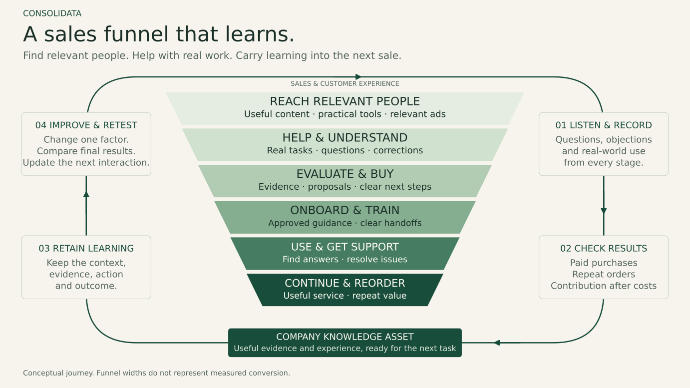

Reach relevant people
Create useful content, tools and relevant distribution around the work your customers need to do. Their questions and requests help you find who needs help.
CUSTOMER JOURNEY IMPROVEMENT
When customer knowledge stays in separate sales conversations, support messages and documents, the next buyer can face the same unanswered questions.
We help you improve the places where your business meets its customers, from useful content and sales conversations to training, everyday support and continued purchasing. We connect that work into one feedback system, run focused improvements with your team and carry useful findings into the next cycle.
Discuss your customer journeyBring one product, one customer group and a recent task.
THE WHOLE CUSTOMER JOURNEY
Useful content and practical tools help relevant people find you. Continued help reveals their real tasks and questions. Those insights should carry through evaluation, purchasing, first use and ongoing support.

Create useful content, tools and relevant distribution around the work your customers need to do. Their questions and requests help you find who needs help.
Follow questions, corrections and objections to recent events, existing workarounds and real costs. Learn which problems matter in practice.
Research accounts, organize evidence and prepare materials for the people actually involved in purchasing. Keep open questions and next steps visible.
Organize approved guidance, training resources, responsibilities and handoffs so a new customer can find what they need.
Make checked answers easy to find. Route new questions to the right people and use recurring issues to inform service and product improvements.
Use actual customer experience to improve service and support continued purchasing where relevant. Carry useful learning into the next relationship.
CONTINUOUS IMPROVEMENT
Choose a real customer problem. Agree the intended result, comparison and observation period. Change one factor, carry out the work and follow what happens.
The context, evidence, action and result, ready for the next task.
Paid purchases. Continued purchasing. Contribution after costs.
Customer questions and other observations help explain the process. The agreed final business result determines whether a change helps. We keep the conditions and uncertainty with each finding so your team can use it appropriately.
WORKING KNOWLEDGE YOUR COMPANY CAN KEEP
A customer's objection can reveal a missing explanation. A training question can expose an unclear handoff. A recurring support issue can point to a service or product improvement.
We organize these findings into a working record your team can maintain, use and export. Artificial intelligence helps with research, analysis and preparation. Your team reviews product-specific information and agrees the changes.
See the work we can deliver →START WITH REAL WORK
Bring one product, one customer group and a recent task. We'll discuss how that task connects to the wider journey, what help would be useful and how to evaluate the result.
Scope, timing, evidence, acceptance terms and fee are agreed before work begins. There is no advance service fee for the first agreed enterprise validation.
Read first-project terms →